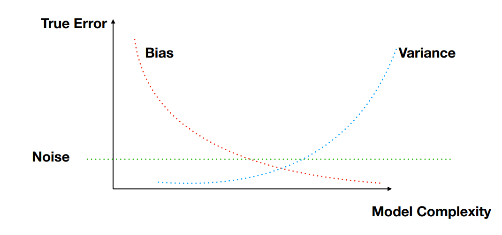
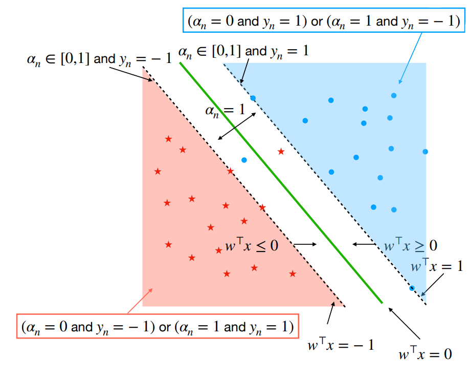
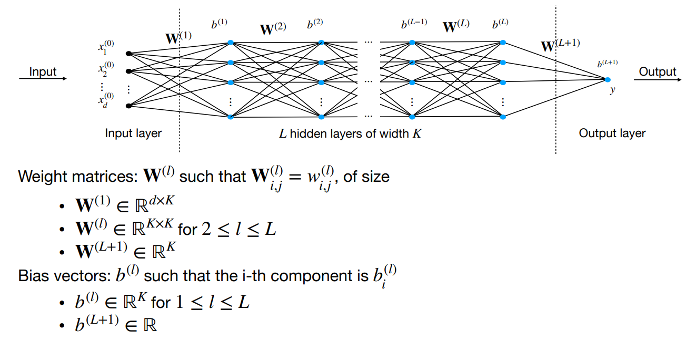
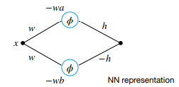
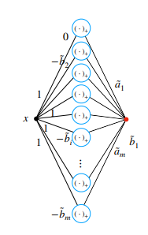
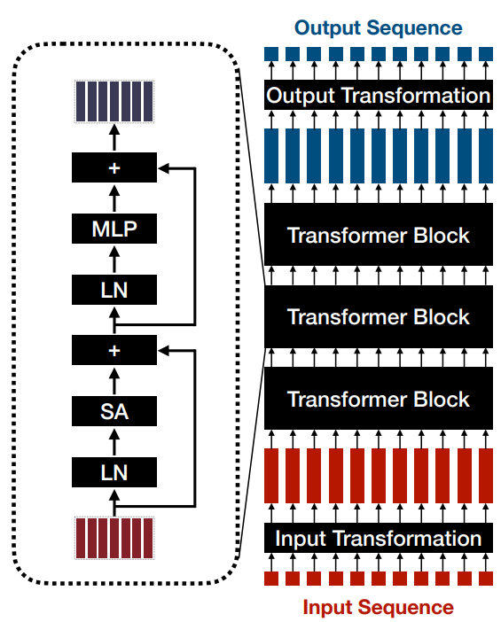
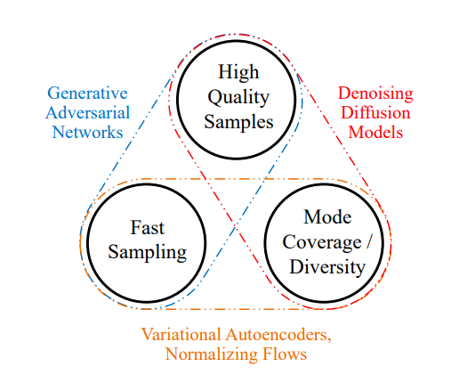
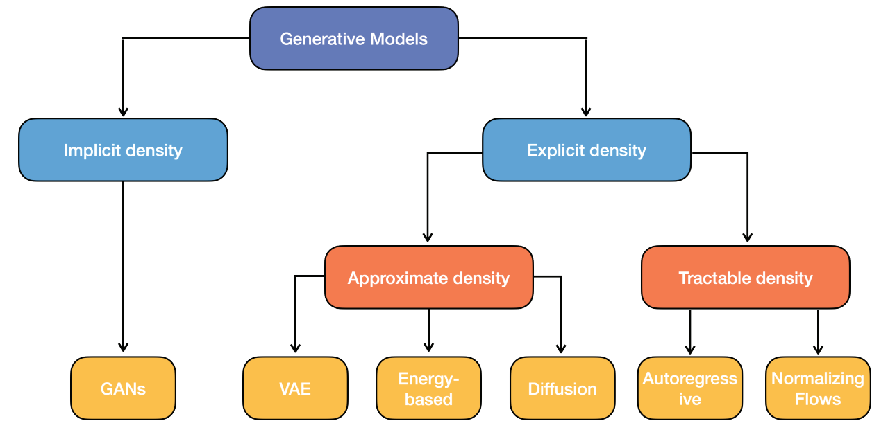
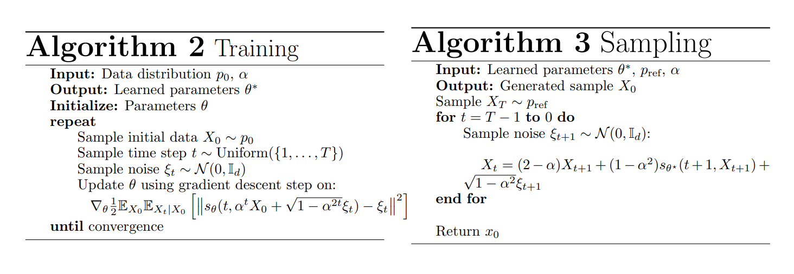

CS-433 Machine Learning
Hand-typed lecture notes for the fall 2023 EPFL Machine Learning Course - Yannick Detrois
1Linear Regression
y_n \approx \mathbf{\tilde x}_n^T \mathbf{\tilde w}, where \mathbf{\tilde x}_n \in \R^{D+1} is the feature vector with a 1 in front (adding a constant) and \mathbf{\tilde w} \in \R^{D+1} the weight vector for predicting label y_n
2Loss functions
Desirable: symmetric around 0, penalise large and very large mistakes similarly
- \text{MSE(w)} = \frac{1}{N} \sum_{n=1}^{N} e_n^2 = \frac{1}{N} \sum_{n=1}^{N} [y_n - f_\mathbf{w}(\mathbf{x}_n)]^2 → not good for outliers
- \text{MAE(w)} = \frac{1}{N} \sum_{n=1}^{N} |e_n| = \frac{1}{N} \sum_{n=1}^{N} |y_n - f_\mathbf{w}(\mathbf{x}_n)| → good for outliers
Convexity
Function h(u) is convex if for any u, v \in \R^D and for any 0 \leq \lambda \leq 1 we have:
A strictly convex function has a unique global minimum. For convex functions, every local minimum is a global minimum. Sums of convex functions and compositions of convex functions with convex non-decreasing functions are convex.
3Optimisation
Find \mathbf{w}^* \in \R^D such that it is \text{min}_\mathbf{w} \mathcal{L}(\mathbf{w})
Grid search: n parameters per dimension → n^D evaluations and no guarantee to find minimum
Gradient descent: \nabla \mathcal{L}(\mathbf{w}) := \left[ \frac{\partial \mathcal{L}(\mathbf{w})}{\partial w_1}, ..., \frac{\partial \mathcal{L}(\mathbf{w})}{\partial w_D} \right] \in \R^D
- \mathbf{w}^{(t+1)}:=\mathbf{w}^{(t)}-\gamma \nabla \mathcal{L}(\mathbf{w^{(t)}})
- Linear MSE: \mathbf{e = y-Xw}
- \mathcal{L}(\mathbf{w}) = \frac{1}{2N}\mathbf{e}^\top\mathbf{e}
- \nabla \mathcal{L}(\mathbf{w}) = -\frac{1}{N}\mathbf{X}^\top\mathbf{e}
- Global complexity \mathcal{O}(ND)
SGD:
- \mathbf{w}^{(t+1)}:=\mathbf{w}^{(t)}-\gamma \nabla \mathcal{L}_n(\mathbf{w^{(t)}})
- Cheap but unbiased estimate of the gradient
- Global complexity \mathcal{O}(D)
Mini-batch SGD:
- g:=\frac{1}{|B|} \sum_{n \in B}\nabla \mathcal{L}_n(\mathbf{w^{(t)}}), B is a subset of the N samples
- \mathbf{w}^{(t+1)}:=\mathbf{w}^{(t)}-\gamma g
Subgradient descent:
- Convexity for differentiable functions: \mathcal{L}(\mathbf{u}) \geq \mathcal{L}(\mathbf{w})+\nabla \mathcal{L}(\mathbf{w})^\top(\mathbf{u}-\mathbf{w})
- Subgradient g \in \partial \mathcal{L}: \mathcal{L}(\mathbf{u}) \geq \mathcal{L}(\mathbf{w})+g^\top(\mathbf{u}-\mathbf{w})
Projected gradient descent:
- Intersections of convex sets are convex
- Projection on convex constraint set \mathcal{C} after each gradient descent step
- Turn into unconstrained problem: penalty function if not in \mathcal{C}
4Least squares
Gram matrix \mathbf{X}^\top \mathbf{X}\in \R^{D\times D}. Closed form for optimal \mathbf{w}^* given by \mathbf{X}^\top \mathbf{X} \mathbf{w}^*=\mathbf{X}^\top \mathbf{y}. The Gram matrix is invertible iff \mathbf{X} \in \R^{N \times D} has full column rank. Complexity is \mathcal{O}(ND^2+D^3)
- L_2-regularisation closed form with \lambda' = 2N \lambda: (\mathbf{X}^\top \mathbf{X}+\lambda'\mathbf{I}_d) \mathbf{w}^*=\mathbf{X}^\top \mathbf{y}
- Eigenvalues of (\mathbf{X}^\top \mathbf{X}+\lambda'\mathbf{I}) are at least \lambda'
5Maximum Likelihood
Maximising the likelihood instead of minimising the loss. Our data is y_n = \mathbf{x}^\top_n \mathbf{w} + \epsilon_n, where \epsilon_n is a random variable (e.g. Gaussian) that is iid across n.
Log likelihood \mathcal{L}_{LL}(\mathbf{w}) := \log p(\mathbf{y}|\mathbf{X}, \mathbf{w}) = \sum_{n=1}^N p(y_n|\mathbf{x}_n, \mathbf{w})
6Regularisation
Penalise complex models: \text{min}_\mathbf{w} \mathcal{L}(\mathbf{w}) + \Omega(\mathbf{w})
- L_2-regularisation (ridge): \Omega(\mathbf{w})=\lambda||\mathbf{w}||_2^2
- Gradient is 2\mathbf{w}
- Model small in magnitude
- L_1-regularisation (lasso): \Omega(\mathbf{w})=\lambda||\mathbf{w}||_1
- Gradient is \text{sign}(\mathbf{w})
- Model is sparse
- L_0-regularisation (lasso): \Omega(\mathbf{w})=\#(\mathbf{w} \neq 0)
- Shrinkage, dropout, weight decay, early stopping
7Generalisation, model selection and validation
Generalisation gap: how far is the test from the true error?
Given K different models f_K, an iid test set \text{S}_\text{test}\sim \mathcal{D} (that follows the true data distribution) and a loss \mathcal{L} \in [a, b]:
To remove the absolute value, put 2 in front of the square root and take the values of K for which the functions f_{\hat k} and f_{k^*} have the smallest empirical or true risk respectively.
Hoeffding inequality \forall \epsilon \geq 0, \Theta_n are the loss functions
Hoeffding lemma \forall s \geq 0, and RV \mathbf{X} \in [a,b] with \mathbb{E}[\mathbf{X}] = 0
K-fold cross validation returns an unbiased estimate of the generalisation-error and its variance
8Bias-variance decomposition
Bias and variance of the prediction considering that the input sample S is a random variable

Noise → Strict lower bound, as independently random and impossible to predict (1st term)
Bias → how far off in general the model’s predictions are from the correct value (2nd term)
Variance → How much the predictions for a given point vary between realisations of the training set (3rd term)
9Classification
The optimal classification performance is the Bayers classifier := g_* = \text{arg} \min_g \mathcal{L}_\mathcal{D}(g)
g_*(x) = \text{arg} \max_{y \in \{ -1, 1\}} \mathbb{P}(Y=y|X=x)Loss functions
- (0-1 Loss) → \mathcal{L}(y, y')=1_{y \neq y'} which is 1 if y \neq y' and 0 if y = y'
- True risk for classification for a predictor g → \mathcal{L}_\mathcal{D}(g)=\mathbb{E}_\mathcal{D}[1_{Y \neq g(X)}] = \mathbb{P}_\mathcal{D}[Y \neq g(X)]
- Convex and continuous losses (\eta = yx^\top w):
- quadratic loss := (1-\eta)^2 → symmetric but only works for [-\infty, 2]
- hinge loss := [1-\eta]_+ → penalty on [-\infty, 2] (prediction wrong or not confident)
- logistic loss := \frac{\ln(1+e^{-\eta})}{\ln(2)} → always penalising
Non-parametric
Approximate conditional distribution \mathbb{P}(Y=y|X=x) via local averaging (KNN)
Parametric
Approximate true distribution \mathcal{D} via training data → minimise empirical risk (ERM)
Instead of learning function g: X\rightarrow \{-1, 1\}, we learn a continuous function h and predict with g(x) = \text{sign}(h(x)). We replace the 0-1 loss by a convex and continuous surrogate \phi:
In the over-parameterisation (n<<d) regime, the training data is well fit with a regressor → a good regressor can be used as a classifier
10Logistic regression
Logistic function \sigma(\eta):=\frac{e^\eta}{1+e^\eta}. We have 1-\sigma(\eta) = \frac{1}{1+e^\eta} and \sigma'(\eta):=\sigma(\eta)(1-\sigma(\eta))
Robust against outliers and unbalanced data. If \sigma(x)>\frac{1}{2}, then for a > 0, \sigma(ax)>\frac{1}{2}
Optimality:
- linear for y \in \{1, 0\}: w_* = \text{arg} \min_w \mathcal{L} := \frac{1}{N}\sum_{n=1}^N-y_n x_n^\top w + \log (1+e^{x_n^\top w})
- generic h for y \in \{1, 0\}: \mathcal{L}(y, h(x)) = -yh(x) + \log (1+e^{h(x)})
- generic h for y \in \{-1, 1\}: \mathcal{L}(y, h(x)) = \log (1+e^{-yh(x)})
Gradient:
- linear problem convex and \nabla \mathcal{L}(w)=\frac{1}{N} \mathbf{X}^\top(\sigma(\mathbf{X}w)-y))
Hessian:
- \nabla^2 \mathcal{L}(w)=\frac{1}{N} \mathbf{X}^\top S \mathbf{X}, where S=\text{diag}[\sigma(x_n^\top w)(1-\sigma(x_n^\top w))] \geq 0
- Hessian is psd → loss is convex
- Newton’s method: \mathbf{w}^{(t+1)}:=\mathbf{w}^{(t)}-\gamma^{(t)} \nabla^2 \mathcal{L}(\mathbf{w^{(t)}})^{-1}\nabla \mathcal{L}(\mathbf{w^{(t)}})
When data is linearly separable, weights w \rightarrow \infty even though all points are well separated. Solution: add L_2 regularisation
11Support vector machines (SVM)
We consider y \in \{-1, 1\}. Margin of a hyperplane := \min_{n \leq N} |w^\top x_n|
Hard SVM - 3 equivalent formulations
- \max_{w, ||w||=1} \min_{n \leq N} |w^\top x_n| such that \forall n, y_n x_n^\top w \geq 0
- \max_{M \in \R, w, ||w||=1} M such that \forall n, y_n x_n^\top w \geq M
- \min_w \frac{1}{2}||w||^2 such that \forall n, y_n x_n^\top w \geq 1 → M = \frac{1}{||w||}
Soft SVM - non linearly separable data
Maximise margin while allowing some constraints to be violated
[z]_+ = \max(0, z)=\max_{\alpha \in [0,1]} \alpha z. Continuous but non-smooth → subgradients
Dual formulation
Define a function G(w, \alpha) such that \min_w \mathcal{L}=\min_w \max_\alpha G(w, \alpha). G is convex in w and concave in \alpha.
Primal problem: \min_w \max_\alpha G(w, \alpha)
Dual problem: \max_\alpha \min_w G(w, \alpha)
where w(\alpha)=\frac{1}{\lambda N} \mathbf{X}^\top\mathbf{Y}\alpha and \mathbf{Y} = \text{diag}(\mathbf{y}). \mathbf{YXX}^\top\mathbf{Y} is psd and only depends on kernel matrix.
- \alpha_n = 0 if x_n is on the right side, outside of the margin (1-y_nx_n^\top w < 0)
- \alpha_n \in [0,1] if x_n is on the right side and on the margin (1-y_nx_n^\top w = 0)
- \alpha_n = 1 if x_n is on the inside the margin or on the wrong side (1-y_nx_n^\top w > 0)
- Points for which \alpha_n > 0 are called support vectors (model only depends on support vectors)

12Nearest Neighbour Classifiers
KNN can be used for:
- regression: for point x, find the K closest points y_k (the K points in the neighbourhood) → the estimate is then given by f_K(x)=\frac{1}{K} \sum^Ky_k
- classification: get K closest neighbours of x and count how many are in groups a or b → assign group of point x depending on the majority group in the neighbourhood
Small K → complex decision boundary → low bias, high variance (overfitting)
Large K → when k=N prediction is constant → high bias, low variance
Curse of dimensionality: N i.i.d. points uniform in [0,1]^d \rightarrow \mathbb{P}(\exist x_i \in \square^d) = 1-(1- r^d)^N
Generalisation bound for 1-NN: \mathbf{X} \times \mathbf{Y} = [0,1]^d \times \{0,1\}
- Bayes classifier minimises \mathcal{L} over all classifiers f_*(x)= 1_{\eta(x)\geq\frac{1}{2}} where
\eta(x)=\mathbb{P}(Y=1|X=x) - Bayes risk: \mathcal{L}(f_*)=\mathbb{P}(f_*(X)\neq Y)=\mathbb{E}_{X\sim \mathcal{D_X}}[\min\{\eta(x), 1-\eta(x)\}]
- Assumption: \exist c \geq 0, \forall x, x' \in X: |\eta(x)-\eta(x')| \leq c||x-x'||_2 (Lipschitz with ct. c)
→ nearby points are likely to share the same label - Claim: \mathbb{E}_{S_{train}}[\mathcal{L}(f_{S_{train}})] \leq 2 \mathcal{L}(f_*) + 4c \sqrt{d}N^{-\frac{1}{d+1}}
- To achieve constant error we need N \propto d^{\frac{d+1}{2}}
- \mathbb{P}(Y'\neq Y) \leq 2\min\{\eta(x), 1- \eta(x)\}+c||x-x'||
- Let p_k = \mathbb{P}(X \in \text{Box}_k), then sample X has probability 1-(1-p_k)^N to have a neighbour in S_{train} in the box at distance \leq \sqrt{d}\epsilon (\epsilon is Box edge lenght) and probability (1-p_k)^N to not have a neighbour in the box (closest neighbour \leq \sqrt{d})
- \mathbb{E}[||X-\text{nbh}(X)||] \leq \sum_k p_k[(1-p_k)^N \sqrt{d} + (1-(1-p_k)^N) \sqrt{d}\epsilon]
- Local averaging methods aim to approximate the Bayes’ predictor directly by approximating the conditional distribution \hat p(y|x). For N \rightarrow \infty, 1-NN is competitive with Bayes’ classifier
13Kernel trick
Covariance matrix \mathbf{X}^\top \mathbf{X}\in \R^{D\times D}, Kernel matrix \mathbf{X}\mathbf{X}^\top\in \R^{N\times N}
→ Ridge regression \mathbf{w}^*=\frac{1}{N}\mathbf{X}^\top (\frac{1}{N} \mathbf{X} \mathbf{X}^\top+\lambda\mathbf{I}_N)^{-1} \mathbf{y} complexity \mathcal{O}(DN^2+N^3)
Representer theorem: For any loss \mathcal{L} there exists \alpha_* \in \R^N, where R(w) is any increasing regularisation term, such that
Kernel trick: Kernel function \kappa(x, x') = \phi(x)^\top \phi(x') → computation of linear classifiers in high-dimensional space \phi(x_n) \in \R^{\tilde d} without computing directly in that space. Prediction with kernel: y=\phi(x)^\top w_* = \sum_{n=1}^N \kappa(x, x_n)\alpha_{*n} (non-linear prediction in X space but linear in feature space \phi(X))
- Linear kernel: \kappa(x, x') = x^\top x' \rightarrow \phi(x)=x
- Quadratic kernel: \kappa(x, x') = (x x')^2 \rightarrow \phi(x)=x^2 (for x, x' \in \R)
- Polynomial kernel: \kappa(x, x') = (x_1 x_1'+x_2 x_2'+x_3 x_3')^2
\rightarrow \phi(x)=[x_1^2, x_2^2, x_3^2, \sqrt{2}x_1x_2, \sqrt{2}x_1x_3, \sqrt{2}x_2x_3] \in \R^6 (for x, x' \in \R^3) - Radial basis function (RBF) kernel:
- x, x' \in \R^d: \kappa(x, x') = e^{-(x-x')^\top(x-x')}
- x, x' \in \R: \kappa(x, x') = e^{-(x-x')^2} \rightarrow \phi(x)=e^{-x^2}(..., \frac{2^{\frac{k}{2}}x^k}{\sqrt{k!}},...) for 0\leq k<\infty
Building new kernels from existing ones:
- \kappa(x, x') = \alpha \kappa_1(x, x') + \beta \kappa_2(x, x') is a kernel for \alpha, \beta \geq 0
- \kappa(x, x') = \kappa_1(x, x') \kappa_2(x, x') is a kernel
Mercer’s condition: \exist \phi(x) such that \kappa(x, x') = \phi(x)^\top \phi(x') iff
- kernel function is symmetric: \kappa(x, x') = \kappa(x', x) \forall x, x'
- kernel matrix is psd: \kappa(x, x') \geq 0
14Neural Networks
Learn non-linear function f_{NN}(x) to transform x into a good feature representation for predictions.
Multi-layer perceptron (MLP) structure

Network with L hidden layers with K_L neurons each. The output of hidden layer l is
x^{(l)}=f^{(l)}(x^{(l-1)}):=\phi((\mathbf{W}^{(l)})^\top x^{(l-1)}+b^{(l)}), where the weights \mathbf{W}^{(l)} and biases b^{(l)} are learnable → \mathcal{O}(K^2L) learnable parameters. The global function y=f(x^{(0)}) is the composition f=f^{(L+1)} \circ f^{(L)} \circ ... \circ f^{(1)}
- Inference: h(x) = f(x)^\top w^{(L+1)}+b^{(L+1)}
- Regression → h(x)
- Binary classification with y\in \{-1,1\} → \text{sign}(h(x))
- Multi-Class classification y\in \{1,...,K\} → \text{arg} \max_{c\in \{1,...,K\}}h(x)_c
- Training
- Regression → \mathcal{L}(y,h(x))=(h(x)-y)^2
- Binary classification with → \mathcal{L}(y,h(x))=\ln(1+\exp(-yh(x)))
- Multi-Class classification → \mathcal{L}(y,h(x))=-\ln(\frac{e^{h(x)_y}}{\sum_{i=1}^K e^{h(x)_i}})
- Activation functions:
sigmoid
\phi(x) = \sigma(x), ReLU \phi(x) = [x]_+ = \max\{0, x\}, GeLU \phi(x) \approx x\cdot\sigma(1.702x)
Representation power
All sufficiently smooth function can be approximated by a one-hidden-layer NN (l_2 norm):
\int_{|x|\leq r} (f(x)-f_n(x))^2dx\leq\frac{(2Cr)^2}{n}, C→ the smaller, the smoother fA NN with sigmoid activation and at most two hidden layers can approximate well a smooth function in l_1-norm
Approximate the function integral in the Riemann sense by a sum of k rectangles
Represent each rectangle using two nodes in the hidden layer of a neural network
h(\phi(w(x-a))-\phi(w(x-b)))
Compute the sum of all nodes in the hidden layer (considering appropriate weights and signs) to get the final output → NN with one hidden layer containing 2k nodes for a
Riemann sum with
k rectangles
l_\infty approximation result: f continuous on [c,d]. \forall \epsilon \geq0, it exists piecewise linear (pwl) continuous q such that \sup_{x\in[c,d]} |f(x)-q(x)| \leq \epsilon
- pwl q can be written as combination of ReLU q(x)=\tilde a_1x+\tilde b_1 + \sum_{i=2}^m \tilde a_i(x-\tilde b_1)_+
- q can be implemented as a one-hidden-layer NN with ReLU activation

Training (SGD) - Backpropagation
Searching \min_{w_{i,j}^{(l)}, b_i^{(l)}} \mathcal{L}(f) using SGD→ non-convex
Forward pass: \mathcal{O}(K^2L)
- x^{(0)}=x_n \in \R^d
- z^{(l)}=(\mathbf{W}^{(l)})^\top x^{(l-1)}+b^{(l)}
- x^{(l)} = \phi(z^{(l)})
Backward pass: \mathcal{O}(K^2L)
- \delta^{(L+1)} = z^{(L+1)}-y_n
- \delta^{(l)}=(\mathbf{W}^{(l+1)}\delta^{(l+1)}) \odot \phi'(z^{(l)})
Derivatives:
- \frac{\partial \mathcal{L}_n}{\partial w_{i,j}^{(l)}} = \delta_j^{(l)}x_i^{(l-1)}
- \frac{\partial \mathcal{L}_n}{\partial b_j^{(l)}} = \delta_j^{(l)}
Parameter initialisation: vanishing/exploding gradient → He initialisation. For ReLU networks, initialise weights as \mathcal{N}(0, \sqrt{2/K} \cdot \mathbf{I}_K)
Normalisation layers: dynamically stabilise training process → faster convergence
Batch normalisation: \bar z_n^{(l)}= \frac{z_n^{(l)}-\mu_B^{(l)}}{\sqrt{(\sigma_B^{(l)})^2+\epsilon}} (\epsilon \approx 0 for numerical stability)
Learnable parameters to reverse normalisation:
\hat z_n^{(l)}=\gamma^{(l)} \odot \bar z_n^{(l)}+ \beta^{(l)}Prediction should not depend on batch → estimate \hat \mu = \mathbb{E}[\mu] and \hat \sigma = \mathbb{E}[\sigma] and use for inference. Requires sufficiently large batches for good approximations
Layer normalisation: Same but summing over K to get \mu and \sigma
Batch independent → use same normalisation for training and inference
Convolutional nets
Image size W\times H. Convolution x_{n,m}^{(1)}=\sum_{k,l}f_{k,l}\cdot x_{n-k,m-l}^{(0)} where f is a local filter with learnable weights. x_{n,m}^{(1)} only depends on values of x^{(0)} close to (n,m) → sparsely connected
- Padding: for borders, use zero padding or valid padding (reduces dimensionality)
- Multiple channels: possible to use C channels (filters) on one input
- Pooling: down-sampling
- max pooling: returns max value of feature portion covered by kernel
- average pooling: returns average value of feature portion covered by kernel
- Hyperparameters: pooling/convolution size/type/stride. Generally: W,H \searrow and C \nearrow
- Weight sharing: back-propagation ignoring weights are shared and summing gradients of edges sharing weights
Regularisation
Residual networks: skip connections around some layers \mathbf{Y}=R(\mathbf{X})+\mathbf{X}: lower training loss
Data augmentation: generate new data with same labels by corrupting existing data → robust
Weight decay: l_2 regularise weights without regularising biases. No direct regularisation effect (scale invariance) but training dynamics differ
Dropout: at each training step, retain nodes in layer (l) with probability p^{(l)} and scale by p^{(l)} (for inference, where all nodes are used). Variance not preserved! → works poorly with normalisation
15Transformers
Transformer f:sequence \rightarrow sequence. Applicable across any modality (everything can be a token), good for long-range dependencies in text, self-attention scales quadratically but highly parallelisable

Input Transformations
Input \rightarrow tokens \in \R^D- for each word in text→ token ID → vector in \R^D
- for each patch in image → flatten \in \R^{F} → multiply by embedding matrix \mathbf{W} \in \R^{F\times D}
Transformer block
tokens \in \R^D \rightarrow tokens \in \R^D- Attention: A:tokens \rightarrow tokens
- Query tokens Q \in \R^{T_{out}\times D_K}
Key tokens K \in \R^{T_{in}\times D_K} - mixes info between tokens ~ weighted average with weights p_{i,j} based on how similar q_i and k_j are: P=\text{softmax}\left(\frac{QK^\top}{\sqrt{D_K}}\right), where \text{softmax}(\mathbf{x})_i=\frac{e^{x_i}}{\sum_j e^{x_j}}
- Query tokens Q \in \R^{T_{out}\times D_K}
- Self-Attention: T=T_{in}=T_{out}, X\in \R^{T \times D}
- Queries Q = XW_Q \in \R^{T\times D_K}
Keys K = XW_K\in \R^{T\times D_K}
Values V = XW_V\in \R^{T\times D} - Output Z=\text{softmax}\left(\frac{X W_Q W_K^\top X^\top}{\sqrt{D_K}}\right) X W_V = \text{softmax}\left(\frac{QK^\top}{\sqrt{D_K}}\right) V
- Run H self-attention heads in parallel and linearly combine the outputs
- Queries Q = XW_Q \in \R^{T\times D_K}
- MLP: mixes information within tokens \text{MLP}(X)=\varphi(XW_1)W_2 ← learned W
- Other blocks: Layer Normalisation, Skip connections + add positional embedding!
Output Transformations
tokens \in \R^D \rightarrow output- Simple: linear or small MLP, task dependent (classification/multiple outputs)
16Adversarial machine learning
Adversarial risk of classifier f: R_\epsilon(f)=\mathbb{E}_\mathcal{D}\left[ \max_{\hat x, ||\hat x- X|| \leq \epsilon} 1_{f(\hat x)\neq Y} \right] → optimise the input x to get maximum error (easy if already misclassified, else need to optimise). Use smooth classification loss \ell instead of (0-1): output before classification is g, classify with \text{sign}(g(x)). Then the objective is equivalent to \max_{\hat x, ||\hat x- X|| \leq \epsilon} \ell(yg(\hat x)) \Leftrightarrow \max_{||\delta|| \leq \epsilon} \nabla_x \ell(yg(x))^\top \delta because g(x+\delta) \approx g(x) + \delta^\top\nabla_x g(x) (Taylor series)
White box attacks: model g is known
- compute gradient \nabla_x \ell during back-propagation to move in the direction opposite to the right classification
- one-step attack:
- \ell_2 norm: \hat x = x-\epsilon y \frac{\nabla_x g(x)}{||\nabla_x g(x)||_2}
- \ell_\infty norm: \hat x = x-\epsilon y \cdot \text{sign}(\nabla_x g(x))
- multi-step attack: Projected Gradient Descent (PGD): iteratively update \delta and project back on the feasible set ||\delta||\leq \epsilon
- \ell_2 norm: \delta^{t+1} = \Pi_{B_2(\epsilon)} \left[\delta^t+\alpha \frac{\nabla \tilde \ell (x+ \delta^t)}{||\nabla \tilde \ell (x+ \delta^t)||_2} \right]
with
\Pi_{B_2(\epsilon)}(\delta) = \begin{cases}\epsilon \cdot \delta/||\delta||_2 & \text{if } ||\delta||_2 \geq \epsilon \\ \delta & \text{otherwise}\end{cases} - \ell_\infty norm: \delta^{t+1} = \Pi_{B_\infty(\epsilon)} \left[\delta^t+\alpha \cdot \text{sign}( \nabla \tilde \ell (x+ \delta^t)) \right]
with
\Pi_{B_\infty(\epsilon)}(\delta)_i = \begin{cases}\epsilon \cdot \text{sign}(\delta_i) & \text{if } |\delta_i| \geq \epsilon \\ \delta_i & \text{otherwise}\end{cases}
- \ell_2 norm: \delta^{t+1} = \Pi_{B_2(\epsilon)} \left[\delta^t+\alpha \frac{\nabla \tilde \ell (x+ \delta^t)}{||\nabla \tilde \ell (x+ \delta^t)||_2} \right]
Black box attacks: model g unknown
- score-based: we can query model scores g(x) → approximate gradient using finite difference
- decision-based: we can query only prediction f(x)
- transfer attacks: train \hat f \approx f on similar data → transfer white box (\hat f) attack on f
Query with unlabelled data to obtain
\{x_n, f(x_n)\} → model stealing
Create robust models:
- Minimise the adversarial risk → train model on best adversarial example \hat x_n^*
- increased computational time + robustness/accuracy tradeoff (non-robust feature may be more accurate but can have high adversarial risk while robust has less than ideal accuracy but better resistance to attacks)
17Ethics and fairness
No fairness through unawareness! Minorities may be underrepresented → high error rates for minorities (because we aim to avoid overfitting).
Consider we have data X, outcome variables Y and a score function R=r(X) that allows to make classification decisions D=1_{R>t}. Furthermore, let A be a RV that encodes membership status in a protected class.
| D=0 | D=1 | |
|---|---|---|
| Y=0 | True negative Probability 1-\alpha |
Type I error False positive Probability \alpha |
| Y=1 | Type II error False negative Probability \beta |
True positive Probability 1-\beta |
- \text{TPR} = \mathbb{P}(D=1|Y=1)
- \text{FPR} = \mathbb{P}(D=1|Y=0)
- \text{FNR} = \mathbb{P}(D=0|Y=1)
- \text{TNR} = \mathbb{P}(D=0|Y=0)
Fairness criteria: equalise statistical quantities involving two groups a,b \in A
- Independence: R \perp A
- Acceptance rate (decision D) does not depend on group A
- \mathbb{P}(D=1|A=a)=\mathbb{P}(D=1|A=b)
- Counting both true and false positive decisions, but should not compare them!
- Separation: R \perp A | Y
- Post-hoc criterion, but compares by label
- \text{FPR}(a) = \mathbb{P}(D=1|Y=0, A=a) = \text{FPR}(b)
- \text{FNR}(a) = \text{FNR}(b)
- Sufficiency: Y \perp A|R
- Meaning for predicting Y we do not need to know A if we have R
- \mathbb{P}(Y=1|R=r, A=a) = \mathbb{P}(Y=1|R=r, A=b)
- Calibrated by group, i.e. \mathbb{P}(Y=1|R=r, A=a) = r implies sufficiency
- Any of these criteria are mutually exclusive!
- Independence vs. sufficiency: A \perp R and A \perp Y|R \Rightarrow A \perp (Y,R) \Rightarrow A \perp Y
- Independence vs. separation: A \perp R and A \perp R|Y \Rightarrow A \perp Y or R \perp Y
- Separation vs. sufficiency: A \perp R|Y and A \perp Y|R \Rightarrow A \perp (R,Y)
18Unsupervised learning
Representation learning (encoder x \mapsto \phi(x))
Density estimation & generative models (decoder \phi(x) \mapsto x)
19K-Means Clustering, Gaussian Mixture Models (GMM)
K-Means Clustering
Objective:
- For all N data vectors x_n \in \R^D: find cluster means \mu_1, ..., \mu_K and cluster assignments z_{nk} = \begin{cases} 1 & \text{if } x_n \in \text{cluster} K \\ 0 & \text{if } x_n \notin \text{cluster} K \end{cases} \in \R^D
- Assuming K is known, we are searching \min_{z, \mu} \mathcal{L}(z, \mu) = \sum^N \sum^K z_{nk} ||x_n-\mu_k||^2_2
Algorithm: Initialise \mu_k \forall k, then
For all n compute z_n given \mu (cost \mathcal{O}(NKD)) → z^{(t+1)}:=\text{arg} \min_z \mathcal{L}(z, \mu^{(t)})
z_{nk} = \begin{cases} 1 & \text{if } k = \text{arg} \min_j ||x_n-\mu_j||^2_2 \\ 0 & \text{otherwise}\end{cases}For all k compute the group means \mu_k given z (cost \mathcal{O}(NKD))
→ \mu^{(t+1)}:=\text{arg} \min_\mu \mathcal{L}(z^{(t)}, \mu) and \mu_k = \frac{\sum^N z_{nk}x_n}{\sum^N z_{nk}}
Repeat until there is no more change in assignment → no more change of the \mu_k
→ Convergence to a local optimum is assured since each step decreases the cost
K-means as matrix factorisation:
\min_{z, \mu} \mathcal{L}(z, \mu) = \sum^N \sum^K z_{nk} ||x_n-\mu_k||^2_2 = ||\mathbf{X}^\top - \mathbf{MZ}^\top||^2_FThe matrix \mathbf{M} \in \R^{D\times K} contains the K mean vectors \mu_K and \mathbf{Z^\top} \in \R^{K\times N} contains the N assignment vectors. Convex in \mathbf{M} and \mathbf{Z} but not jointly convex.
Frobenius norm: ||A||_F = \sqrt{\sum^M \sum^N |a_{mn}|^2} = \sqrt{\text{tr}(A^*A)}
Gaussian Mixture Models
Elliptical clusters and soft-assignment
Bayes’ Law: p(a, b)=p(a|b)p(b)
Multivariate normal distribution
f(\mathbf{x};\mathbf{\mu},\mathbf{\Sigma}) = \frac{1}{(2\pi)^{k/2}|\mathbf{\Sigma}|^{1/2}} \exp\left(-\frac{1}{2}(\mathbf{x}-\mathbf{\mu})^T\mathbf{\Sigma}^{-1}(\mathbf{x}-\mathbf{\mu})\right)Added \Sigma \in \R^{D^2 \times K} (covariance matrices) and \Pi \in \R^K (cluster probabilities) such that p(z_n = k) = \pi_k where \pi_k > 0 for all k and \sum_{k=1}^{K} \pi_k =1
→ New parameters \theta = \{\mu_1, ..., \mu_K, \Sigma_1, ..., \Sigma_K, \pi\}
marginal likelihood p(x_n|\theta)=\sum_{k=1}^K\pi_k \mathcal{N}(x_n|\mu_k, \Sigma_k) → \mathcal{O}(D^2K) parameters left
Searching \theta^* = \text{arg}\max_\theta \sum_{n=1}^N\log\sum_{k=1}^K \pi_k\mathcal{N}(x_n|\mu_k, \Sigma_k)
- Not convex, not identifiable (permutation), not bounded (\sigma \rightarrow 0)
Expectation-Maximisation (EM) algorithm
- In short: \theta^{(t+1)}:= \text{arg}\max_\theta \sum_{n=1}^N \mathbb{E}_{p(z_n|x_n, \theta^{(t)})}[\log p(x_n, z_n|\theta)]
- Expectation step: find lower bound \underline{\mathcal{L}} such that \mathcal{L}(\theta) \geq \underline{\mathcal{L}}(\theta, \theta^{(t)}) and \mathcal{L}(\theta^{(t)}) = \underline{\mathcal{L}}(\theta^{(t)}, \theta^{(t)})
- Concavity of log: Jensen’s inequality: \log \left(\sum_{k=1}^K q_kr_k\right) \geq \sum_{k=1}^K q_k\log r_k for r_k >0 and \sum_k q_k = 1
- Jensen’s inequality with q_k = \frac{\pi_k^{(t)} \mathcal{N}(x_n|\mu_k^{(t)}, \Sigma_k^{(t)})}{\sum_{k=1}^K\pi_k^{(t)} \mathcal{N}(x_n|\mu_k^{(t)}, \Sigma_k^{(t)})} and r_k = \frac{\pi_k \mathcal{N}(x_n|\mu_k, \Sigma_k)}{q_k}
- Maximisation step:
- \theta^{(t+1)}=\text{arg}\max_\theta \underline{\mathcal{L}}(\theta, \theta^{(t)})
- \mu_k^{(t+1)}:=\frac{\sum_n q_{kn}^{(t)} x_n}{\sum_n q_{kn}^{(t)}}
- \Sigma_k^{(t+1)}:=\frac{\sum_n q_{kn}^{(t)} (x_n-\mu_k^{(t+1)})(x_n-\mu_k^{(t+1)})^\top}{\sum_n q_{kn}^{(t)}}
- \pi_k^{(t+1)}:=\frac{1}{N}\sum_n q_{kn}^{(t)}
- Posterior distribution:
- p(x_n, z_n|\theta) = p(x_n| z_n,\theta)p(z_n|\theta) = p(z_n | x_n,\theta)p(x_n|\theta)
- \text{joint} = \text{likelihood} \cdot \text{prior} = \text{posterior} \cdot \text{marginal likelihood}
- \text{joint} = \mathcal{N}(x_n|\mu_k, \Sigma_k) \cdot \pi_k = q_{kn} \cdot \sum_{k=1}^K\pi_k \mathcal{N}(x_n|\mu_k, \Sigma_k)
20Matrix factorisations
Aim to find \mathbf{W} \in \R^{D\times K} (e.g. movies) and \mathbf{Z^\top} \in \R^{K\times N} (e.g. users) such that \mathbf{X}\approx \mathbf{WZ}^\top, where each user and movie are described by a vector in \R^K and x_{dn} such that (d,n)\in\Omega contains the existing rating of user n for movie d (K\ll D,N). We are minimising:
Regularisation (not matrix factorisation anymore): add \frac{\lambda_w}{2}||\mathbf{W}||^2_F or \frac{\lambda_z}{2}||\mathbf{Z}||^2_F, \lambda_w, \lambda_z>0
SGD:
For a fixed element (d,n):
\frac{\partial \mathcal{L}_{dn}}{\partial w_{d',k}}(\mathbf{W,Z}) = \begin{cases} -[x_{dn}-(\mathbf{WZ}^\top)_{dn}]z_{n,k} & \text{if } d'=d \\ 0 & \text{otherwise} \end{cases} \in \R^K \frac{\partial \mathcal{L}_{dn}}{\partial z_{n',k}}(\mathbf{W,Z}) = \begin{cases} -[x_{dn}-(\mathbf{WZ}^\top)_{dn}]w_{d,k} & \text{if } n'=n \\ 0 & \text{otherwise} \end{cases} \in \R^K
Alternating Least Squares (ALS):
- Assuming no missing entries. First update \mathbf{Z} with fixed \mathbf{W} then \mathbf{W}with fixed \mathbf{Z}
- \mathbf{Z}^\top:=(\mathbf{W}^\top\mathbf{W}+ \lambda_z\mathbf{I}_K)^{-1}\mathbf{W}^\top\mathbf{X}
- \mathbf{W}^\top:=(\mathbf{Z}^\top\mathbf{Z}+ \lambda_w\mathbf{I}_K)^{-1}\mathbf{Z}^\top\mathbf{X}
21Text representation learning
Use log of co-occurence counts of words w_d and context words w_n → sparse matrix \in \N^{D \times N}
- Same objective as matrix factorisations, except for adding a weighting term f_{dn} in the sum. For GloVe, we have f_{dn}:=\min\{1, (\frac{n_{dn}}{n_{max}})^\alpha\} for \alpha\in [0, 1]
- Rows of \mathbf{W} \in \R^{D\times K} and \mathbf{Z} \in \R^{N\times K} are word (or context word) representations
- Skip-Gram model (word2vec): use binary classification to separate real word pairs (w_d, w_n) (appearing together in context window size 5) from fake word paris (random words)
- FastText: matrix factorisation to learn sentence s_n representations (supervised (s_n,y_n)). y_n \in \{-1, 1\} and f is a linear classifier loss, x_n the bag-of-words (no ordering!) representation of s_n. Minimising
22Self-supervised learning
Use pretext tasks f:\mathbf{x}_{in} \mapsto \mathbf{x}_{out} that learn from unlabelled data with a function g: \mathbf{x} \mapsto(\mathbf{x}_{in}, \mathbf{x}_{out}) that creates the data (e.g. predict image rotation, relative patch placement) → only need to corrupt data to create training pairs
Masked Language Modelling (MLM): predict hidden word [MASK]
- Bidirectional Encoder Representations from Transformers (BERT): Encoder only, can look at both previous and following tokens. Pretext tasks: 1.predict original masked token 2. predict whether second sentence immediately follows first sentence
[CLS]. Fine-tuned for sentiment prediction, noun/verb prediction, find start/end of passage. - Next token prediction - Generative Pre-trained Transformers (GPT): Decoder only, can look only at prior tokens (masked attention). Auto-regressive → uses previous output to compute loss (softmax cross-entropy) for next output. Fine-tuned for in-context learning or instruction following.
- Joint Embedding Methods: Learn encoder invariants (e.g. rotations) by creating views (rotations, distorsions) of an original image
- Contrastive learning: positive pair \mathbf{x}, \mathbf{x}^+ and negative view \mathbf{x}^- → s(f(\mathbf{x}), f(\mathbf{x}^+)) > s(f(\mathbf{x}), f(\mathbf{x}^-)), where s is a similarity function (e.g. cosine similarity)
- SimCLR:
- classification with N negative samples
- map encoder output to the similarity f(\mathbf{x})=f_2 \circ f_1(\mathbf{x}) use only f_1 for downstream tasks
- use cosine similarity with temperature scaling \tau: s(\mathbf{e}_1, \mathbf{e}_2)=\frac{\langle\mathbf{e}_1, \mathbf{e}_2 \rangle}{||\mathbf{e}_1||_2||\mathbf{e}_2||_2}/\tau
- generate views with data augmentation
- CLIP: captioned images to learn a joint multimodal embedding space
- SimCLR:
23Generative Models
Creates more form the learned distribution p(x). Explicit → learn distribution. Implicit → only generating samples according to distribution.


Generative Adversarial Networks: Create images from known noise distribution p_z. 2-player game: generator G(\theta) vs. discriminator D(\varphi) (deep NNs). T steps gradient descent for steps
- \varphi^*\in\text{arg} \min_{\varphi \in \Phi} \mathcal{L}^\varphi(\theta^*, \varphi) → distinguishes real (x \sim p_d) vs. generated images G(z)
- \theta^*\in\text{arg} \min_{\theta \in \Theta} \mathcal{L}^\theta(\theta, \varphi^*) → creates realistic images G(z)
- Objective: \min_G \max_D \mathbb{E}_{x \sim p_d}[\log D(x)] + \mathbb{E}_{z \sim p_z}[\log (1-D(G(z)))]
- Theoretical solution: optimum when p_g = p_d with value - \log4
→ Conditional GAN (CGAN): additional information c (e.g. class labels)
Diffusion models: forward decomposition → add noise, backward decomposition → undo noise Use ancestral sampling starting from a pure Gaussian noise and denoising using Markov chain. Often use U-net architecture (with exponential moving average to stabilise training) with ResNet blocks and self-attention layers. To add additional information y (conditional training), the probabilities of neural net s_\theta should be conditional on Y.
